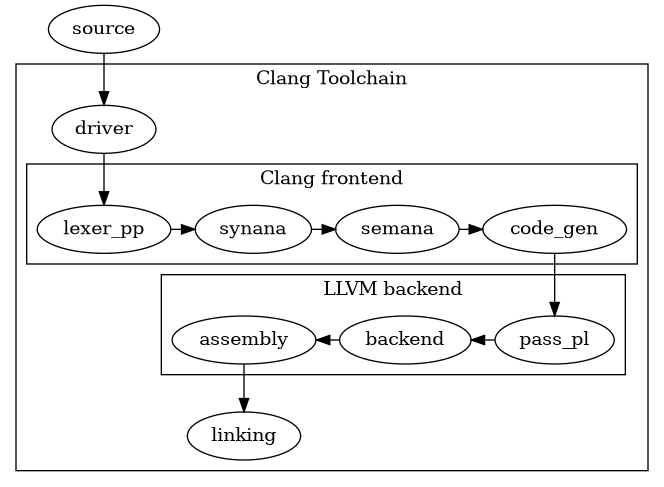

Written Notes
Table of Contents
- 1. General Notes
- 2. Exercises
- 3. Sources:
- 4. Thank You for your time
1. General Notes
1.1. What is Clang
Clang: 2 things \(\to\) compiler, and frontend
Clang: compiler for C, C++, Obj-C
Clang uses the LLVM backend to compile stuff (translation units = completely assembled files to be used in compilation, post includes and macro expansion)
Clang = also name frontend
For presentation: clang tc = toolchain, clang cfe = compiler frontend
cfe:
- preprocessing
- lexing
- parsing
- C/C++ type checking
- overload resolution
- templates
- AST construction
- diagnostics
- AST \(\to\) LLVM IR lowering

1.2. How is Clang implemented
1.2.1. Collection of Libraries:
libbasic: diagnostics, source locations, file cachingliblex: lexing, preprocessing, macro expansionlibparse: parsing, has coarse grained actions which is where some of the code operates onlibsema: semantic analysis, implements the user specified actions and the actions the build the ASTlibcodegen: lowering the AST to LLVM IR. this DOES NOT (!!):- order the blocks over the CFG
- edge alignment
- scheduling of blocks (execution optimisation for hotpath etc)
(that is LLVM's job)
librewrite: text buffer editing for refactoring
this allows simple composition of stuff, for example
- the
clangdLSP: has the driver, lexer, parser, sema, but no codegen for example
1.2.2. Intricacies:
- hand written recursive-descent parser
- parser "dumps" (TECHNICALLY it is more "prepares"): "here are all the tokens you need" \(\to\) sema builds
- 3 base types (as part of the lecture):
- Declarations / Definitions:
TranslationUnitDecl(A translation unit is a file for compilation after preprocessing has been done) - Statements:
Stmt(Exprexplicitly inherits from that) - Types:
Type
- Declarations / Definitions:
- the AST aims to represent source constructs "as faithfully as possible"
(which is why CXXForRangeStmt exists: it contains semantic desugaring but still represents the iterator based for)
some are syntactic (
ParenExpr) \(\to\) () and order is given in the AST, others are purely semantic (ImplicitCastExpr), but most are a mix of both
1.2.3. Compromises / Trade-offs:
- different clients = different frontends
- different syntax
- different linking spec
(that's why you need a compatibility layer for linking
CwithHaskellfor example lul)
- 2 options:
- code generator (no need for full AST) (TCC doesn't have a "real" one, GCC: makes a simplified one)
- refactoring tools want a highly detailed AST with source locations, syntax sugar preservation, etc
clang: big project .:. chose option 2 issue: big RAM footprint fix: big optimisation in lexer / preprocessor but the trade is sometimes needing 6 GB RAM (according to a GitHub issues comment)
AST is treated as immutable (
Matchergivesconstnodes, S2S transformations have to be done viaRewriter/Replacement,librewrite) (more on theMatcherin tools) advantages:- preserves code
disadvantages:
- bolted on
- awkward to work with
- syntax + semantics are part of the same tree
- advantages:
- tools get all the knowledge
- code can be reconstructed from the AST
- disadvantages:
- large memory footprint
- AST has nodes that are purely semantic (as mentioned above)
- advantages:
clangAST directly lowers to LLVM IR immediately (for comments about this search for directly)- advantages:
- frontend stays simple
- less code to maintain
- optimisation etc is centralised
- disadvantages:
- source level semantics cannot be done
- idiosyncratic optimisations cannot be done
- bad idea that's why MLIR / ClangIR exists
controlled by aCLANG_ENABLE_CIR#definehttps://llvm.github.io/clangir/ (or a-fclangirflag)
- advantages:
- UB dependency (seen as user error):
- advantages:
- optimisations
- disadvantages:
- the language spec is not total \(\to\) arch / impl specific stuff exist
this code:
int func(int *ptr) { int val = *ptr; if (!ptr) { return 1; } return *ptr; }
optimisation 1:
valis deleted, and theifstatement isinlinedinto a ternary
optimisation 2:
ptris always valid because it is dereferenced,ifstatement is removed and you get a SegFault
- you cannot assume compiler generated code is correct
- advantages:
- what this gets
clang:- precise diagnostics (underlining with
^~~~, file locations, hints) - massive ecosystem with tools:
- precise diagnostics (underlining with
1.3. What does clang provide?
LibClang:
- uses:
- interface with
clangfrom other languages than C++ - need a stable interface that takes care to be backwards compatible
- powerful, high level abstraction, iterating through the AST without needing intimate knowledge
- interface with
- misuses:
- full control over
clangAST
- full control over
Clang Plugins:
- uses:
- rerun tool when dependencies change
- make or break a build
- full control over
clangAST
- misuses:
- tools outside build environment
- full control over
clang's setup, (e.g.: mapping virtual files) - specific subset of files, not related to files that would trigger rebuilds
LibTooling:
- uses:
- tools over specific file or subset of files
- full control over AST
- share code with Clang Plugins
- misuses:
- run as a build step triggered by change of dependencies
- if you expect a stable interface
- want high level abstractions
- do not want to write your tools in C++ (that means you have to write your tools in C++)
other tools: https://github.com/llvm/llvm-project/tree/main/llvm/tools
other tools specifically used in the assignment:
- llvm-lit (LLVM integrated tester, test suites, etc.)
- opt (modular optimiser and analyser)
- FileCheck (checks 2 files, uses one to verify the other, like grep but optimised for one file in order)
- llc (compiles LLVM source inputs into asm)
- llvm-cov (coverage information, test cases, etc.)
- llvm-profdata (utility for working with profile data files)
- JSON compilation database
- specifies the commands to compile one file specifically (as part of stage 1-twuwu)
(you can recognise this from the fact that
-cc1is not present) - their rationale:
- "build systems are change driven \(\therefore\) not changing the code goes against the architecture of the build system"
- figuring / noticing change is an IO bound process (need to interface / stat files), which is difficult to do fast as part of the compilation process
- tools independent of the build graph (not following compilation order) don't need global serialisation: they only depend on input change (serial = in series here)
it is possible to create compilation database fragments (individual objects for the JSON compilation database) with
clang -MJ <outputfile> %.cppfor example file:// test.c #include <stdio.h> int main(void) { printf("hello world"); return 0; }
if ran with the command:
clang -MJ output test.c -o test:{ "directory": "/home/simon-or-something/coto/notes/clang", "file": "test.c", "output": "/tmp/test-b3c975.o", "arguments": ["/usr/lib/llvm-19/bin/clang", "-xc", "test.c", "-o", "/tmp/test-b3c975.o", "-dumpdir", "test-", "--target=x86_64-pc-linux-gnu"]}(this can be composed into one
compile_commands.jsonfile with[<output1>, <output2>, ...]) however, this only compiles the file, and doesn't link it either:clang(cfe), however, does not use this file. the toolchain uses it. this is primarily for other tools likeclangdandclang-tidy(language server protocol (LSP), and format / refactoring tool respectively) LSPs provide:- code completion
- static analysis
- code peeking / "go to definition"
(that's what i use
clangdfor)- compilation databases also solve the problem of "my code compiles but my static analyser doesn't like it" (legit a compilation database would fix the fact that, before a project build, my LSP doesn't find the headers in the exercise)
- they can also be part of the build process as an intermediate layer for formatting which is kind of neat
an alternative to that is the file
compile_flags.txt, which is what I usually use as a sane stable default but then again, i usegccas a compiler for myCprojects the contents of the file are as follows:<flag1> <flag2> ...
then all the files in the current project
(of whichcompile_flags.txtis at the root) are assumed to be compiled with those flags
it's a simple default but some projects, which have their own tools, have different compilation steps for specific files
so instead of havingcompile_flags.txtin every subproject you have onecompile_commands.jsonat project root
- specifies the commands to compile one file specifically (as part of stage 1-twuwu)
(you can recognise this from the fact that
clang-querya tool for creating / testing a matcher theclangAST is (surprise to literally no one), different to other language's ASTs as mentioned… probably in Sema, the AST has syntactic and semantic objects the like, which is unusual: you don't typically need parenthesis to denote order if the AST encodes the semantic order of execution:-- `a + b * c` vs `(a + b) * c` | add | mul | | a | | add | | mul | | | a | | | b | | | b | | | c | | c
(not technically an AST, this is a parse tree / a traversal by a Pratt Parser, which is explained some other location) this can interface with Matchers directly basically, a
Matcheris a "hook" into the AST traversal: when an AST gets generated, the matcher checks what fits and what is applicable to the given predicatesMatcher's get hooked into withclang::ASTFrontendActionif i'm not mistaken, those are actuallyJob's which are polled in the Sema phase per node, and if something gets matched then the callback is called (the parser does not actually create the AST, Sema does)MatchFinder::run()takes an argument as its persistent storage, which stores theMatcher's result inside aMatchResult&ASTContextis the result of anMatchFinder::MatchResult::Context()call (ASTContextis the context of an AST, long livedASTNode's, like types, decls, identifier table, source manager, etc. that is not stored inside theASTNode) (ASTNodeis the base class for all AST nodes)
1.4. Pipeline
the file dynamic is as follows:
clang/include/clang/contains the headersclang/lib/...contains the source for the libraries as discussed in Collection of Libraries
1.4.1. Driver:
- https://github.com/llvm/llvm-project/blob/main/clang/lib/Driver
- interpreting user flags, cmdline opts
- compresses arguments into
Arginstances - some options just get passed through
- each argument corresponds to one
Option- metadata
- describes how arg is parsed
-lfoo -l foo(Makefile is included)- JoinedArg
- SeparateArg
- detecting target platform as an argument for the compiler
- finds headers, libraries, startup objects, sysroot
- sysroot = directory that serves as the root for headers and libraries used by compilers
- so atypical systems can run LLVM as well
- deciding what compilation stages are required and constructing the internal frontend command
- you can run
-###to see that
- you can run
- compresses arguments into
1.4.2. Lexer:
- https://github.com/llvm/llvm-project/blob/main/clang/lib/Lex
- invoked like so:
clang -E %.cpp -o %.ii(seemanpagedescription) - tokenisation: the file is turned into an exhaustive token stream
- preprocessing: includes macro expansion, management of includes (files being inserted), etc
- tokens contain source level locations for diagnostics:
Tokenis implemented as such inclang/include/clang/Lex/Token.h:class Token { SourceLocation::UIntTy Loc; // actual source location SourceLocation::UIntTy UintData; // either length when normal, or end of source range when annotation token void *PtrData; // IdentifierInfo* | isLiteral (may be dirty like trigraphs or escaped newlines) | Ptr to sema specific data | Decl* | null tok::TokenKind Kind; // The actual flavour of token this is unsigned short Flags; // Bits that are tracked, members of TokenFlags // etc, https://github.com/llvm/llvm-project/blob/main/clang/include/clang/Lex/Token.h }
- comments are… weirdly enough, included still:
TOK(comment)- However that is only included in
-E -C[C]mode
- the dynamic of the file is actually so interesting:
- tokens are defined in
clang/Basic/TokenKinds.def, wrapped in a macro capture to expand - by default the macro expansion defines to void:
#define TOK(X) - inside
clang/Basic/TokenKinds.h, they:- redefine the wrapping:
- for
TOK:#define TOK(X) X,from#define TOK(X) - for
PPKeywordKind:#define PPKeywordKind(X) pp_##X,, from#define PPKeywordKind(X) - etc
- for
- include the
clang/Basic/TokenKinds.deffile - this is like an XMacro system, they expand into actual token enums with keywords at build time of
clang - crazy stuff right there, this is genuinely crazy
- redefine the wrapping:
- tokens are defined in
1.4.3. Parsing + Sema:
- https://github.com/llvm/llvm-project/blob/main/clang/lib/Parse
- invoked like so:
clang -cc1 -ast-dump %.cpp(or-ast-dump=json, stops after AST construction)clang -cc1 -emit-llvm-bc file.ii -o file.bc(stops after bitcode generation)
parsing: turns tokens from the lexer into syntactic + semantic declarations
- syntactic: present in the code
- semantic: intricacies of that statement
(examples i have mentioned somewhere else:
ParenExprdictates the order of execution, which the structure of the AST already guarantees) (but, to stay faithful, there is an AST node for that) (other example:ImplicitCastExpr, you don't writestd::implicit_cast<bool>(...)when you check if something non boolean is a boolean (that would be an explicit cast XD)- the parser is a handwritten recursive descent parser in
clang/lib/Parse/(2 sources say so, Wikipedia and arm presentation)- "owns" control flow (meaning something like this formulates / structures the control flow by pulling tokens from the preprocessor, and decides "what syntactic thing is this")
- it does not build the AST itself (as i've mentioned, it calls into
Sema'sActionsfor every recognised construct which in turn manages the AST - expressions use operator-precedence climbing instead of pure recursion:
Parser::ParseRHSOfBinaryExpressioninclang/lib/Parse/ParseExpr.cpp: https://github.com/llvm/llvm-project/blob/main/clang/lib/Parse/ParseExpr.cpp (the code is too long to include here so file is linked directly) (basically massive while loop which checks each operator in categories via Pratt Parsing strategy:)this is basically how Pratt Parsing handles binding power with left associative and right associative handling:
- for left assoc: right binding power > left binding power
- for right assoc: right binding power < left binding power
okay so Pratt Parsing: (i have not sat EiCB)
- Pratt Parsing assumes there is no operators that operate on atoms across other atoms, so
a " b ' c,'binding withawould not work for Pratt Parsing - each operator has a left and a right binding power, for right associativity left < right
- it's link magnets:
- each atom has a magnetisation of 1 mM (milliMagnet)
- each operator has a left magnetisation (left binding power, right binding power) (X binding power: how attractive is it for things on side X)
- then you just turn on the circuit and watch the electricity
- this only applies when LHS isn't invalid, RHS isn't invalid, and the ternary middle isn't invalid
- the comments literally say this builds the AST so that's good confirmation for me
- note
Actions= theSemainstance. the parser knows nothing about AST node layout
- sema (
clang/lib/Sema/) builds + type checks the AST nodes, this is where the good stuff happens (good stuff = AST transformations)- https://github.com/llvm/llvm-project/blob/main/clang/lib/Sema
- source level representation of the program
entry for "binops",
Sema::ActOnBinOpinclang/lib/Sema/SemaExpr.cpp:ExprResult Sema::ActOnBinOp(Scope *S, SourceLocation TokLoc, tok::TokenKind Kind, Expr *LHSExpr, Expr *RHSExpr) { BinaryOperatorKind Opc = ConvertTokenKindToBinaryOpcode(Kind); assert(LHSExpr && "ActOnBinOp(): missing left expression"); assert(RHSExpr && "ActOnBinOp(): missing right expression"); // Emit warnings for tricky precedence issues, e.g. "bitfield & 0x4 == 0" DiagnoseBinOpPrecedence(*this, Opc, TokLoc, LHSExpr, RHSExpr); BuiltinCountedByRefKind K = BinaryOperator::isAssignmentOp(Opc) ? BuiltinCountedByRefKind::Assignment : BuiltinCountedByRefKind::BinaryExpr; CheckInvalidBuiltinCountedByRef(LHSExpr, K); CheckInvalidBuiltinCountedByRef(RHSExpr, K); return BuildBinOp(S, TokLoc, Opc, LHSExpr, RHSExpr); }
- the assert
&&is a cheap trick to print error messages with simple syntax - so the token kind (
tok::plus) dies here, converted to a semantic opcode (BO_Add)
- the assert
BuildBinOpdecides: overloaded operator in C++? \(\to\) overload resolution machinery, otherwise \(\to\)Sema::CreateBuiltinBinOp, which is a bajillion line long switch: (but there are more bajillion line switches, you can grep forswitch (Opc)and you will find so many switches) (Tbh this code was pre-processed with AI and asked about it because this file is 22k lines)switch (Opc) { // ... case BO_Add: ConvertHalfVec = true; ResultTy = CheckAdditionOperands(LHS, RHS, OpLoc, Opc); break; case BO_Sub: ResultTy = CheckSubtractionOperands(LHS, RHS, OpLoc); break; // ... }
- the
Check*Operandsfunctions do the C/C++ "usual arithmetic conversions": this is where implicit AST nodes get inserted (ImplicitCastExprfor int promotion, lvalue-to-rvalue, etc.), the stuff you see in-ast-dump - int promotion is… funny…:
- unary
+/-accept arithmetic or unscoped-enum operands (+additionally accepts pointers) - iff the type is integral: (
bool,char,short, unscoped enums, bit-fields) "integral promotion" is performed: they becomeint(orunsigned intifintcan't hold the range) something somethingImplicitCastExprintitself and wider types stay as they are (you wouldn't download a caryou wouldn't un-promote alongto anint) (doubleis arithmetic but not integral \(\to\) allowed as operand, no integral promotion) (lo and behold, integral comes from Latin "integralis" \(\to\) "forming a whole,") (so now i have a citation for a Turing Award paper, and an etymology website) (set me free)
- unary
- the
- templates:
TreeTransformclones AST subtrees with parameters substituted (this is why instantiation errors point at both the template and the use site)
- output: one immutable AST per translation unit, rooted at
TranslationUnitDecl, owned byASTContext
1.4.4. CodeGen:
- https://github.com/llvm/llvm-project/blob/main/clang/lib/CodeGen
- invoked like so:
clang -S -emit-llvm %.cpp -o %.ll(not optimised IR)clang -cc1 -emit-llvm-bc file.ii -o file.bcclangproduces%.bcby default, and after fruitless endeavours (StackOverflow, fileinfo:%.ll= LLVM IR)%.llis textual IR (human readable IR)%.bcis bitcode (not human readable IR)
clang/lib/CodeGen/ModuleBuilder.cppcontainsCreateLLVMCodeGen, which creates the consumer responsible for turning clang declarations and expressions into an llvm::Module- lives in
clang/lib/CodeGen/, the classes areCodeGenModule(per translation unit) andCodeGenFunction(per function). no intermediate IR of clang's own: it walks the AST and callsllvm::IRBuilderdirectly (this is a backup to the statement I made earlier, that there is no IR pre lowering of AST into the IR) however, "now"clang/lib/CIR/...exists, andclang/lib/CIR/CodeGen/...is a brother implementation ofclang/lib/CodeGen/...(or sister, of course) (you, dear reader, have just assumed the law of the excluded middle) statements: a big manual dispatch,
CodeGenFunction::EmitStmtinCGStmt.cpp:void CodeGenFunction::EmitStmt(const Stmt *S, ArrayRef<const Attr *> Attrs) { if (EmitSimpleStmt(S, Attrs)) // compound stmts, decls, break/continue... return; // elementary, my dear Watson (Sherlock never said that btw) if (!HaveInsertPoint()) { // afaik that means the cursor is in unreachable code if (!ContainsLabel(S)) return; // -> don't even emit it (unless a label EnsureInsertPoint(); // could make it reachable again) } switch (S->getStmtClass()) { // XMacro again! every Expr subclass becomes a case label: #define STMT(Type, Base) #define EXPR(Type, Base) case Stmt::Type##Class: #include "clang/AST/StmtNodes.inc" EmitIgnoredExpr(cast<Expr>(S)); // expression statement: value discarded break; case Stmt::IfStmtClass: EmitIfStmt(cast<IfStmt>(*S)); break; case Stmt::WhileStmtClass: EmitWhileStmt(cast<WhileStmt>(*S), Attrs); break; // ... one Emit* per statement kind // Theres even simd (simdeez nuts) and CXXForRangeStmtClass } }
control flow is lowered to basic blocks by hand,
EmitIfStmt(CGStmt.cpp):void CodeGenFunction::EmitIfStmt(const IfStmt &S) { // if the condition constant-folds, don't even emit the dead arm: // My constants don't jiggle jiggle, they fold // Constant folding btw is when the value of constants are inserted instead of their names // This can inline code, I say _can_ because a constant function may have side effects bool CondConstant; if (ConstantFoldsToSimpleInteger(S.getCond(), CondConstant, ...)) { ... } llvm::BasicBlock *ThenBlock = createBasicBlock("if.then"); llvm::BasicBlock *ContBlock = createBasicBlock("if.end"); llvm::BasicBlock *ElseBlock = ContBlock; if (S.getElse()) ElseBlock = createBasicBlock("if.else"); EmitBranchOnBoolExpr(S.getCond(), ThenBlock, ElseBlock, ThenCount, LH); EmitBlock(ThenBlock); { RunCleanupsScope ThenScope(*this); // <- C++ destructors live here! EmitStmt(S.getThen()); } EmitBranch(ContBlock); // ... same for else ... }
- those block names are exactly the
if.then:/if.end:labels you see in%.bc / %.lloutput RunCleanupsScopeis the mechanism that turns "scope exit" in the AST into destructor calls / EH landing pads in IR
- those block names are exactly the
expressions: visitor over the AST,
ScalarExprEmitterinCGExprScalar.cpp:class ScalarExprEmitter : public StmtVisitor<ScalarExprEmitter, Value*> { CodeGenFunction &CGF; CGBuilderTy &Builder; // wraps llvm::IRBuilder // ...
the binop visitors are XMacro'd too (they really love this pattern, but i see why):
#define HANDLEBINOP(OP) \ Value *VisitBin##OP(const BinaryOperator *E) { \ QualType promotionTy = getPromotionType(E->getType()); \ auto result = Emit##OP(EmitBinOps(E, promotionTy)); \ if (result && !promotionTy.isNull()) \ result = EmitUnPromotedValue(result, E->getType()); \ return result; \ } \ Value *VisitBin##OP##Assign(const CompoundAssignOperator *E) { \ ApplyAtomGroup Grp(CGF.getDebugInfo()); \ return EmitCompoundAssign(E, &ScalarExprEmitter::Emit##OP); \ } HANDLEBINOP(Mul) HANDLEBINOP(Div) HANDLEBINOP(Rem) HANDLEBINOP(Add) // ...
- one macro invocation generates both
a + banda += bhandling. free real estate that the land lords don't seem to charge me for
- one macro invocation generates both
the actual moment of lowering.
ScalarExprEmitter::EmitAdd, i.e., what a single+becomes:Value *ScalarExprEmitter::EmitAdd(const BinOpInfo &op) { if (op.LHS->getType()->isPointerTy() || op.RHS->getType()->isPointerTy()) return emitPointerArithmetic(CGF, op, ...); // p + i -> getelementptr! if (op.Ty->isSignedIntegerOrEnumerationType()) { switch (CGF.getLangOpts().getSignedOverflowBehavior()) { case LangOptions::SOB_Defined: // -fwrapv return Builder.CreateAdd(op.LHS, op.RHS, "add"); case LangOptions::SOB_Undefined: // default C/C++ if (!CGF.SanOpts.has(SanitizerKind::SignedIntegerOverflow)) return Builder.CreateNSWAdd(op.LHS, op.RHS, "add"); // add nsw [[fallthrough]]; case LangOptions::SOB_Trapping: // -ftrapv / UBSan return EmitOverflowCheckedBinOp(op); // llvm.sadd.with.overflow + branch } } if (op.LHS->getType()->isFPOrFPVectorTy()) { if (Value *FMulAdd = tryEmitFMulAdd(op, CGF, Builder)) // contract to fma return FMulAdd; return Builder.CreateFAdd(op.LHS, op.RHS, "add"); } return Builder.CreateAdd(op.LHS, op.RHS, "add"); }
- this one function is the "compromises" section:
- language semantics (signed overflow = UB) become IR flags (
nsw) - pointer arithmetic becomes
getelementptr(type aware address maths) - sanitiser / -fwrapv flags change which instruction is emitted, not a later pass (it's so rushed)
- language semantics (signed overflow = UB) become IR flags (
- so
a + b\(\to\)%add = add nsw i32 %a, %b. AST node in,llvm::Value*out, no middle step
- this one function is the "compromises" section:
- also in CodeGen (because someone has to do it): ABI stuff, record layout, calling conventions (
ABIInfo), Itanium name mangling, vtables, EH scaffolding (Itanium: discontinued family of 64b intel uprocessors, arch: IA-64)
1.4.5. LLVM IR
(this is where i explain LLVM IR and SSA as one block to illustrate the structure of either)
- LLVM uses SSA as its core, and claims it provides:
- type safety
- low-level operations
- flexibility
- capability of representing "all" high-level languages cleanly
(i will assume high level in this context means that the language isn't a 1:1 mapping to the generated code)
(definitions of high and low level not really agreed upon, i remember being upset at someone calling
Ca high level language) (but others sayCis a low level language, which it is by today's standards, but i will retract my previous opinion thatCis low level) (i don't use enoughC++to be able to form an opinion about this becauseC++has many abstractions at a language level)
used in 3 forms:
- in-memory compiler
- bitcode representation (the difference to bytecode is that bytecode is in
Javaand bitcode is in LLVM) LLVM is a "lower level, register-based virtual machine", and is designed to be a boundary between a backend and a frontend the JVM is a "higher level, stack based virtual machine". it has garbage collection andpublic static void main(String args[]) - human readable text format. it is arguable how readable textual LLVM IR for the uninitiated is, but that's the point of the colloquium the forms are equivalent, and should provide a natural means to debug and visualise the transformations (you can see the output of optimisations done in the middle end because that's completely s2s, which is neat)
(it almost feels perverse to talk about
Javain here, considering how much i hhhhhhate the language)"well-formed" means that all variables are dominated: domination is when a path from Source to node B is dominated by A if all paths to B pass through A (insert meme of:
- wants to be dominated: \(\phi\) nodes (they fix a lack of domination)
- will dominate you: root path variables (later definitions usually are dominated)
- will ask you to be gentle: optimiser (it can work with domination but doesn't need it)
) (i cannot take the naming scheme serious, i will avoid using that word from here on out)
syntax:
- 2 types:
- global (prefixed with
@): functions, global variables - local (prefixed with
%): register names, types
- global (prefixed with
(RegEx:
[%@][-a-zA-Z$._][-a-zA-Z$._0-9]*) (oh and btw: identifiers that require other characters in their names can be surrounded with quotes)- special characters may be escaped using
\xx, wherexxis the ASCII code for the character in hexadecimal (in this way, any character can be used in a name value, even quotes themselves. great)- the
"\01"prefix can be used on global values to suppress mangling
- the
- unnamed values are represented as an unsigned numeric value with their prefix, e.g.,
%12,@2… - prefixes are used because:
- clashes with reserved words
- unnamed identifiers allow a quickly making a temporary variable where needed (SSA)
- 2 types:
Module's are translation units (defined elsewhere), and they build up an LLVM programModule's consist of:- functions (both definitions and declarations):
declare <type> @<name>(<type>) <modifiers>define <type> @<name> { <body> } - global variables (
@<name>) - symbol table entries (symbol table: identifier / symbols \(\to\) necessary information to use it, e.g., name + address)
"metadata storage for symbols (like functions and variables and stuff)
objdump -d <obj>,nm <obj>(both can dump symbols)
- functions (both definitions and declarations):
Module's are combined together with the LLVM linker (lldif i'm not mistaken) which merges definitions, declarations, and symtab entries; Declare the string constant as a global constant. @.str = private unnamed_addr constant [13 x i8] c"hello world\0A\00" ; External declaration of the puts function declare i32 @puts(ptr captures(none)) nounwind ; Definition of main function define i32 @main() { ; Call puts function to write out the string to stdout. call i32 @puts(ptr @.str) ret i32 0 } ; Named metadata !0 = !{i32 42, null, !"string"} !foo = !{!0}
- important
C-fsearches:- "Linkage Types" (linkage: access across modules and storage specification for linking)
- "Calling Conventions" (implementation and capabilities of function calls)
- "Visibility Styles" (visibility specification for modules, pre linking and stuff)
- "DLL Storage Classes" (DLL interface. not usable with
internalorprivate) - "Thread Local Storage Models" (thread usage and multi threading)
- "Runtime Preemption Specifiers" (should this symbol be replaced by an outside symbol at run time, or will this symbol resolve to something inside the same unit)
- "Structure Types" (structs and stuff)
- "Non-Integral Pointer Type" (WIP still, i don't understand how that makes sense)
- "Global Variables" (regions of memory allocated at compile time instead of run time)
- "Functions" (25 attributes for a function)
the instruction reference: (you have no idea how long this document is: https://llvm.org/docs/LangRef.html)
- format:
%var = <opcode> [flags] <type> <op1>, <op2>[, more stuff]var: the SSA value produced. assigned exactly once, ever, in the whole function. if you want to assign twice, you either make a new name or you go through memory (alloca~/~store~/~load) and letmem2regclean it up later (this is the single most important thing about the IR and it is also the thing that makes it look insane at first)<opcode>: the verb. reserved word, no prefix, hence no clash with your names[flags]: promises you make to the optimiser. they are not checks. if you lie, you getpoison, andpoisonpropagates until something branches on it or dereferences it, at which point it is UB and the compiler is allowed to do whatever is funniest (the mental model that finally worked for me: flags are not "make this faster", they are "i solemnly swear this case never happens, please stop emitting the code that handles it")<type>: written once and applies to both operands where they must match. LLVM is typed, this is not optional decoration (but in actuality types are not real)- operands are values: named
%foo, unnamed%3, globals@bar, or constants42,null,undef,poison,zeroinitializer
- instructions live in basic blocks, blocks end in exactly one terminator, terminators are the only things that move control flow
(a
callis not control flow. it leaves and comes back.invokeis control flow because it might not come back the way you expected) three values you will see and must not confuse:
undef: "some value of this type, i'm not telling you which, and possibly a different one each time you look". being deprecated in favour ofpoisonpoison: "a value so invalid that any instruction consuming it also produces poison". stronger, and the one flags producefreeze: the escape hatch that turns either of the above into some fixed arbitrary value (see below). exists precisely because "different each time you look" breaksx - x == 0
%varis SSA produced, assigned singularly statically, like the name would make you guessSSA: SSA is an intermediate form of code after the AST was lowered into IR (remember that
clanglowers the AST to IR directly, how that is done is still a little beyond me) SSA is a specific scheme values inside the CFG component, which is a structure for how control flows, but as a graph (so naturally, CFG was aptly named "control flow graph") SSA is important for:- the fact that every value is immutable (not sure why that is important, probably for optimisations)
- value fetching becomes difficult, SSA is as close to register based as it gets which makes it simpler and \(\phi\) nodes are an abstraction for that
- every optimisation that asks "where did this come from" would otherwise get a shrug as an answer
3 examples i mentioned in an email:
- dce (dead code elimination): unreachable code is deleted, if a value has no uses and has no side effects, it can be optimised out
- licm (loop invariant code motion): moves non changing code out of loops, which makes the loop smaller because you don't need allocations each loop (useful in servers and polling applications)
- gvn (global value numbering): reduces redundant expressions and the likes by assigning value numbers
establishes an equivalence relation (i don't exactly know what this means in this context)
gvn replaces values with provably the same value numbers (it says provably in the docs)
one implementation is with a table, that maps value to representative value number
(like… the value 4 would map to gvn 69420)
\(\phi\) nodes wont get replaced, functions / loads wont get replaced either because you don't actually know
so something like:
if table.contains([opcode, vn1, vn2]) { use that; } else { make a new one; }basically it removes computation, this is called memorisation or something, DP uses this
optimisation mainly requires SSA because SSA the main issue with that is conditional definitions: how would you make a definition dependent on a value? enter \(\phi\) nodes (he says in parenthesis) \(\phi\) nodes are selectors: they capture 2 (i think 2, i haven't seen a \(\phi\) node with 3+ but i would think it would work the same ? i don't know, will test in the colloquium) \(\phi\) nodes basically means "this is one value, it is either this or that", and in actuality, because LLVM is register based, it just means will decay to something to the same register note that \(\phi\) nodes are not instructions, they decay to instructions where applicable: usually, they just decay to
storeorloador whatever it was, but if register pressure is high, they can even decay to move and load instructions. neat but this doesn't happen at the SSA level, this happens at the end, specifically, the \(\phi\) node elimination stage part of that stage is also to make all SSA virtual registers (%value,%othervalue,%r69, …) decay to one specific register, for each variable take this:; this comment is not actually a comment, this comment contains metadata ; `optnone` means that this function specifically should not be optimised, even if you pass `-O2` in ; i think it is safe to remove that, but then naturally, only one function gets updated, so to "circumvent" that, one can add ; `-Xclang -disable-O0-optnone` to the `clang` command ; Function Attrs: optnone define i32 @add(i32 %0, i32 %1) { %3 = alloca i32, align 4 %4 = alloca i32, align 4 store i32 %0, ptr %3, align 4 store i32 %1, ptr %4, align 4 ; where did 2 go %5 = load i32, ptr %3, align 4 %6 = load i32, ptr %4, align 4 %7 = add nsw i32 %5, %6 ret i32 %7 }- to verify, run
opt -passes=verify %.ll -o /dev/null
(there is a lot of "logic duplication" (technically, a lot of aggregates, but i think other optimisations level this too))
apply:
opt -passes=sroa %.ll -o /dev/null(scalar replacement of aggregate, so intermediate sum values are explicitly replaced) (i think gvn + dce does this too) and the "expected" output is:define i32 @add(i32 %0, i32 %1) { %3 = add nsw i32 %0, %1 ret i32 %3 }if you don't do that then:
%0,%3,%5%1,%4,%6
would point to the same registers during register allocation (BUT only because you duplicate the value 2x, you store the value somewhere, then load it from there into another value)
- Instruction Reference:
- Terminator Instructions:
every block ends with one of these (relatively complete):
ret: return from the functionret <type> <value>orret void- components: the type must match the function's declared return type. that's it. it is the one instruction with no surprises
- the return value is the function result;
ret voidtakes no operand at all (not evenvoid undef, don't try)
br: branch. two options:- unconditional:
br label %dest - conditional:
br i1 %cond, label %iftrue, label %iffalse - components:
%condmust be exactlyi1. noti32, not "nonzero". if you have ani32youicmp ne i32 %x, 0first, which is why unoptimisedCcode is full of%tobool- both targets are
label-typed operands, i.e., references to basic blocks in this function - true target comes first. this trips everyone up once
- if
%condispoison, the branch is immediate UB. this is the main way poison becomes a real pleasure to work with
- unconditional:
switch:nway branch on an integerswitch <intty> %val, label %default [ <intty> <const>, label %dest ... ]- components: a value, a mandatory default label, then a table of (constant, label) pairs
- constants must be unique, must be constants (not values)
- the whole thing must be exhaustive by nature of the default
- the backend picks jump table vs. comparison chain vs. bit test: you are just declaring intent
(this is the one instruction where the IR is genuinely higher level than the machine, and it's really neat)
indirectbr: branch to a computed addressindirectbr ptr %addr [, label %d1, label %d2, ... ]- components: an address (obtained via
blockaddress(@fn, %bb)) and an exhaustive list of possible destinations the list is not decoration!! the CFG needs it or every analysis falls apart (if some locations are unreachable you may be in deep trouble) - this is how you express
GCC's computedgoto/ threaded interpreters
invoke: a call that participates in control flow%r = invoke <cconv> <ty> @fn(<args>) to label %normal unwind label %except- components: everything
callhas, plus two labels: where to go on normal return, where to go if the callee unwinds - the
%exceptblock must start with alandingpad(or acatchswitch~/~cleanuppadin the funclet model) - this is why "a call is not control flow" has an asterisk. exceptions are the asterisk
(
C++exceptions are one of the reasons the IR has this whole extra dialect bolted on, and it shows) (exceptions should not be control flow, but:Javadoes it: escalate until a handler is foundPythondoes it:raise StopIterationwhen an iterator endsC++does it: (no concrete examples, i try to avoidC++outside of universality)
callbr:invoke's weirder sibling, for inline asm that jumpscallbr <ty> asm ...(<args>) to label %fallthrough [label %other, ...]- components: a normal continuation plus a list of "indirect" labels the asm blob may jump to exists mostly for the linux kernel's static branches / jump labels
resume: continue unwindingresume <ty> %exnval- takes the value produced by a
landingpadand hands it back to the unwinder the block ends there (unwinding is exception stuff where you say "yo does this have a handler? no? okay cleanly delete everything :D")
catchswitch/catchret/cleanupret: thefuncletbased EH (Windows, mostly)%cs = catchswitch within <parent> [label %handler...] unwind to caller(orunwind label %next)catchret from %pad to label %continuecleanupret from %pad unwind label %next/unwind to caller- components share the
withintoken idea: each pad is nested inside a parent pad (ornone), and the tokens are typedtokenso you cannot fake them
unreachable: "control never gets here"- no operands, no successors. it is a promise, not an assertion; reaching it is UB (but UB isn't real so it's fine, trust me)
clangemits it afternoreturncalls likeabort(): which is exactly what should be after thecall void @abort()in the exercise'sif.thenblock (instead of thebr label %if.endthe slides use with a "technically unreachable" comment) (i am starting to unearth real gunk inside LLVM)
- Aggregate Instructions:
struct / array (aggregates) stuff:
extractvalue: read a field out of a first-class aggregate%r = extractvalue <aggty> %val, <idx>[, <idx>]*- components: the aggregate value and a list of constant indices, one per level of nesting no runtime indices, because the result type has to be known statically
insertvalue: produce a new aggregate with one field replaced (SSA)%r = insertvalue <aggty> %val, <ty> %elt, <idx>{, <idx>}*
- mostly in multi-return functions (a
{i32, i1}fromllvm.uadd.with.overflow, say) and on small structs passed in registers (this example was fetched with AI)
- Memory Access and Addressing Operations
alloca: stack allocation%ptr = alloca [inalloca] <ty> [, <intty> %numElements] [, align <n>] [, addrspace(<n>)]- components:
<ty>is the type of 1 element: the result is aptrto it, never the value itself%numElementsoptional, and it may be a runtime value (VLA, and a simple element counter may undercount)alignis a power of two: if omitted the target picks (please let the target pick)- the memory lives until the function returns and is not zeroed for whatever reason
- before
mem2regevery local, including ones that are obviously registers, gets anallocaplus astorethat pass is what deletes them, but i can't assume that this was run so… yay
load: read through a pointer%r = load [volatile] <ty>, ptr %p[, align <n>][, !nontemporal ...][, !invariant.load ...]- components:
<ty>is the type being loaded, and since pointers went opaque it is the only place that type information existsload i32, ptr %pandload float, ptr %pdiffer only here (this is theOpaquePointerschange; old IR wrotei32*and the type was redundant. now it isn't)volatilemeans "do not remove, do not merge, do not reorder with other volatiles" (theCkeyword, not a thread thing)alignmatters for correctness on some targets and for the profilers byte accounting
- loading from a
null, OOB, or misaligned pointer is UB
store: write through a pointer (or store a value at a specific pointer)store [volatile] <ty> %value, ptr %p[, align <n>]- components: note the operand order: value first, address second
this is backwards from every assembly language you know and it will bite you
(now i don't know any assembly other than
x86_64, andRISC-V - produces no result. it is one of the few instructions with no
%r =
getelementptr: compute an address, touch nothing%r = getelementptr [inbounds] [nusw] [nuw] <ty>, ptr %base{, <intty> %idx}*- components:
<ty>is the type the base pointer is being treated as (pretend this is that type) (it is not fetched from anywhere, it is stated)- the first index does not index into the type: it strides over it, exactly like
Cpointer arithmetic on an array of<ty>(this is why struct GEPs almost always start withi64 0("the zeroth%struct.A, …")) - every subsequent index steps into the type one level: struct fields must be
i32indexed (the field number has to be known to know the result type) array/vector indices may be runtime values of any integer width inbounds= the whole computation stays within one allocated object. (otherwisepoison. this is what lets alias analysis conclude two objects don't overlap, like withrestrictinC)nusw~/~nuw= the index arithmetic doesn't wrap (signed / unsigned)- it never dereferences anything, a GEP alone reads no memory and can be freely moved
from the slides:
%struct.A = type { i8, i64, [5 x i32] } %iPtrIdx = getelementptr %struct.A, ptr %a, i64 0, i32 2, i64 3 ; ^type ^base ^0 ^field 3 ^elem 4reads as:
- take
%aas a%struct.A - move zero whole structs
- take field 3 (
vals) - take element 4 (
&a->vals[3])
- take
- and the reason your profiler pairs GEPs with
loads/stores: GEP says whereload/storesays when and how wide (neither alone is a memory access) (the LangRef even has a whole separate document,GetElementPtr.html, subtitled roughly "the often misunderstood GEP instruction". they know)
icmp: integer / pointer comparison (ICMB)%r = icmp [samesign] <cond> <ty> %a, %b- components:
<cond>is one of,eqneugtugeultulesgtsgesltsle
(the
u~/~sprefix is where signedness lives, and the operands are just bits)- equality has no prefix because
eq/nedon't care (are those bits the same) - operands may be integers, pointers, or vectors
- result is
i1(or<N x i1>for vectors, so like a map) thati1is whatbrwants, which closes the loop and is able to be used as a jump condition "Absolute Sprungaddresse" - Prof. Koch samesignpromises both operands have the same sign bit, so signed and unsigned comparison agree
%tobool = icmp ne ptr %0, nullfrom the exercise is exactly the "if (p)"
phi: the SSA "instruction"%r = phi [fast-math flags] <ty> [ %val0, %pred0 ], [ %val1, %pred1 ], ...- components:
- one
[value, predecessor block]pair for every predecessor of the containing block not one less, not one more, and the blocks must be the actual predecessors (and this also answers my question) - all
phinodes must be at the very top of the block, before any non \(\phi\) instruction to ensure the selections are covered - it picks the value corresponding to whichever block control came from it "executes" atomically with the block entry, so a group of \(\phi\) all read the old values (which is why parallel copies work and sequential ones wouldn't)
- one
- the entry block can never have one, since it has no predecessors
- this is the thing that lets SSA survive control flow at all
(it is also what
mem2reginserts when it deletes youralloca's (and consequently the reason my profiler's picture changes so much depending on whether that pass ran)
call: call a function%r = [tail|musttail|notail] call [fast-math] [cconv] [ret attrs] <ty> [<addrspace>] <fnptrval>(<args>) [fn attrs] [operand bundles]- components, in the order they hurt:
<ty>is the return type, or the full function type<retty> (<argtys>)when it's varargs or otherwise ambiguous<fnptrval>is a value, not a name (a direct call just happens to use the constant@foo) (anything else is an indirect call, which is why my pass has to handlegetCalledFunction()returning null)- arguments carry their own types and parameter attributes (
noundef,nonnull,byval(<ty>),sret(<ty>),zeroext…) (ABI attributes must match at both ends or it's UB) tailpermits TCO,musttailrequires it (with strict signature rules),notailforbids it- the calling convention must match the callee's or UB (stated above… somewhere)
- and again: not a terminator. the block continues afterwards
- for the profiler, this is where
malloc,free, and friends show up: matched by name, since at the IR leveloperator newis just a call to a mangled symbol (which is neat)
- Terminator Instructions:
1.4.6. LLVM Middle End:
- invoked like so:
opt -passes='default<O2>' %.bc -S -o %.opt.bc(can also be invoked withclang -O2) (or%.llrespectively)- https://llvm.org/docs/Passes.html
(e.g.:
opt -passes="mem2reg,instcombine" ...)
- https://llvm.org/docs/Passes.html
(e.g.:
- input IR from clang is deliberately naive: every local var is an
alloca+ loads/stores- first thing the pipeline does is
mem2reg~/~SROA: promote allocas to SSA registers - clang does this so it does NOT have to build SSA form itself
the frontend stays dumb, LLVM collects it (the actual division of labour compromise)
this was mentioned above, and this is the
N x Mthing: instead ofNMcompilers you writeNfrontends and M backends so let me ask you this: do you like efficiency?
- first thing the pipeline does is
- the pipeline is assembled in
llvm/lib/Passes/PassBuilderPipelines.cpp(analysis passes, transformation passes, utility passes IR \(\to\) IR)- analysis:
- purpose: prepare metadata of code execution for other passes to build upon
- transformation:
- purpose: this actively changes code execution without changing output
- note: that's the optimisations people think about, like turning
for (int i = 0; i < 10; ++i) { sum += i; }intosum = 10*11/2;
- utility:
- purpose: verification, viewing, and debugging
- analysis:
what a pass looks like
InstCombinerImpl::visitAddinllvm/lib/Transforms/InstCombine/InstCombineAddSub.cppimmediately gets "pattern matched" to death:Instruction *InstCombinerImpl::visitAdd(BinaryOperator &I) { if (Value *V = simplifyAddInst(I.getOperand(0), I.getOperand(1), I.hasNoSignedWrap(), I.hasNoUnsignedWrap(), SQ.getWithInstruction(&I))) return replaceInstUsesWith(I, V); // x+0 -> x, etc. if (SimplifyAssociativeOrCommutative(I)) return &I; // (A*B)+(A*C) -> A*(B+C) etc if (Value *V = foldUsingDistributiveLaws(I)) return replaceInstUsesWith(I, V); if (Instruction *X = foldAddWithConstant(I)) return X; // ... hundreds more folds }
(see in Haskell you could do something like this:)
-- Func <type> = <return> -- so for value types like: data Something where OneThing :: Something OtherThing :: Something Func OneThing = "specific return type or so" Func OtherThing = "also specific but different, or straight up execution"
(Haskell is weird like that, you define equations which by definition have to be pure) (unless you use the
IOmonad but that is also assumed to be pure because side effects have no effect if they aren't invoked) (which then means you're forced to call it fromMainwhere side effects do exist and have an effect) (anyway the above code is Haskell type matching. it probably is possible to do this with_Generic) (this may be aCthing though, they never added_GenericinC++. outside of coto, i don't useC++, so this was unknown to me)
1.4.7. LLVM Backend:
- invoked like so:
llc %.bc -o %.s(orclang -S, note: this skips over the middle end)- (or
%.llrespectively) (orclang -c -S %.bc -o %.s, but here you can add-O2) (TECHNICALLY this is disingenuous, the middle end is the magic stuff, optimisation, DCE, hot code path stuff…) (so this is actually middle end and backend at once)
- (or
- lives in
llvm/lib/CodeGen/(target independent) +llvm/lib/Target/X86/etc- this target independence made LLVM live up to its name: "Low-Level Virtual Machine", alas, they dropped that, so now it's just LLVM
- instruction selection: IR \(\to\) SelectionDAG \(\to\) machine instructions
- the DAG is legalised (= tries to turn unsupported types into the ones supported by the target) then matched
- at that point the type checking has already been done btw, that happens in the frontend
matching rules are written in
TableGen(.td) patterns, e.g.,llvm/lib/Target/X86/X86InstrArithmetic.td:defm ADD : ArithBinOp_RF<0x01, 0x03, 0x05, "add", MRM0r, MRM0m, X86add_flag, add, 1, 1, 1>;tblgencompiles those into a byte coded matcher table at LLVM build time- same XMacro tomfoolery as
TokenKinds.def
- so IR
add\(\to\) DAGISD::ADD\(\to\) pattern match \(\to\)ADD32rrMachineInstr
- the DAG is legalised (= tries to turn unsupported types into the ones supported by the target) then matched
- after ISel:
- instruction scheduling
- register allocation (greedy allocator by default): vregs \(\to\)
eax,rdi, spills (register spilling is moving registers to RAM if there are not enough registers available) (this is so tourism: i talk about XMacros and pattern matching in great detail, then define what register spills are) - head / tail insertion (stack frame setup)
- (prologue / epilogue insertion \(\to\)
PrologEpilogInserter.cpp) one way that helped me see the relation of stack frames when i was a small compiler aficionado was this:
- stack frames are the time component
- execution is the space component
(just don't try and do any maths or geometry on those assertions, they WILL fail)
- (prologue / epilogue insertion \(\to\)
- target-specific assembly / object generation
1.4.8. Assembly + Linking:
- assembly: invoked like so:
llvm-mc -filetype=obj %.s -o %.o(orclang -c %.s -o %.o) - linkage: invoked like so (note: this works on Gentoo, but not on Debian so adjust accordingly):
ld -o % -dynamic-linker /lib64/ld-linux-x86-64.so.2 --eh-frame-hdr /usr/lib64/crt1.o /usr/lib64/crti.o /usr/lib/gcc/x86_64-pc-linux-gnu/15/crtbegin.o %.o -L/usr/lib/gcc/x86_64-pc-linux-gnu/15 -lstdc++ -lm -lgcc -lgcc_s -lc /usr/lib/gcc/x86_64-pc-linux-gnu/15/crtend.o /usr/lib64/crtn.o(orclang %.o -o %) - clang doesn't shell out to
asby default:- the integrated assembler (MC layer,
llvm/lib/MC/) takesMachineInstrsand does the stuff (byte encoding, relocations, instructions, etc., that's all i am aware of, i didn't go through the files as rigorously) MCStreamerhas two backends:- emit assembly file
-S,%.s - emit (unlinked) object file
-c,%.o
- emit assembly file
-fno-integrated-asgets you the old external-assembler behaviour btw
- the integrated assembler (MC layer,
- linking: driver invokes the system linker (
ld,gold) or LLVM's ownlld(-fuse-ld=lld)- resolves symbols across objects, applies relocations, pulls in
crt*.ostartup objects + libs the driver located way back in step 1 (sysroot!) - link time optimisation (LTO): with
-fltothe "object files" are actually LLVM bitcode the middle end runs AGAIN inside the linker across the whole program. the pipeline eats itself - you need to include EH Frames:
- binary search table<code address, frame description entry in eh frame>
- use in exceptions / backtrace:
libgcc_s/libunwindneeds to find the unwind info for each return address on the stack- does so by calling
dl_iterate_phdr()which walks along the loaded objects, looking forPT_GNU_EH_FRAME, then BST that table - (without it, the unwinder has to fall back to the older registration mechanism:
__register_frame_info(driven bycrtbegin.o)- older libraries rely on
dl_iterate_phdrso may not work without it
- older libraries rely on
- line 330 @
clang/lib/Driver/ToolChains/Gnu.cpp
- resolves symbols across objects, applies relocations, pulls in
1.4.9. Rough Implementation:
this is a brief summary of all the notes above:
these are the files that are actively called: clang_main is the entry point (main is generated),
//===-- driver-template.cpp -----------------------------------------------===// // // Part of the LLVM Project, under the Apache License v2.0 with LLVM Exceptions. // See https://llvm.org/LICENSE.txt for license information. // SPDX-License-Identifier: Apache-2.0 WITH LLVM-exception // //===----------------------------------------------------------------------===// #include "llvm/ADT/ArrayRef.h" #include "llvm/Support/InitLLVM.h" #include "llvm/Support/LLVMDriver.h" int @TOOL_NAME@_main(int argc, char **, const llvm::ToolContext &); int main(int argc, char **argv) { llvm::InitLLVM X(argc, argv@INITLLVM_ARGS@); return @TOOL_NAME@_main(argc, argv, {argv[0], nullptr, false}); }
oh and btw: the entire toolchain can be linked as one binary (llvm-driver) like busybox
that is why argv[0] (or in most occurrences, Argv[0]) is seen and can be used as a dispatcher
clang/tools/driver/driver.cpp calls to:
./cc1_main.cppwhich is the main frontend compilation IF (big if):argv[1]is in fact-cc1, then this is the frontend invocation// within driver.cpp: if (Tool == "-cc1") return cc1_main(ArrayRef(ArgV).slice(1), ArgV[0], GetExecutablePathVP);
i guess that's useful to short circuit.
clang(cfe) callscc1_main(in "subprocess mode", or well specifically when-fno-integrated-cc1is listed) c++ does not have recursivemainfunctions, which is why the Brainfuck interpreter cannot be preservedi am the captain now, "i am the frontend now"
if not then "i am the driver now". oh and it spills temporary files into /tmp/
Driver::BuildCompilation (clang/lib/Driver/Driver.cpp) manages the planning
- argument restructuring, this is the
Argspiel mentioned in the Driver section above derives arguments and uses them to create a
Compilationinstance for this specific invocation:clang/lib/Driver/Compilation.cppTranslateInputArgs+ clang (tc)TranslateArgs\(\to\)DerivedArgListthen theDriverwrites the actions and jobs (tasks per action) from the inputs into theCompilationinstance it seems// Rewrite preprocessor options, to replace -Wp,-MD,FOO which is used by // some build systems. We don't try to be complete here because we don't // care to encourage this usage model. if (A->getOption().matches(options::OPT_Wp_COMMA) && A->getNumValues() > 0 && (A->getValue(0) == StringRef("-MD") || A->getValue(0) == StringRef("-MMD"))) { // Rewrite to -MD/-MMD along with -MF. if (A->getValue(0) == StringRef("-MD")) DAL->AddFlagArg(A, Opts.getOption(options::OPT_MD)); else DAL->AddFlagArg(A, Opts.getOption(options::OPT_MMD)); if (A->getNumValues() == 2) DAL->AddSeparateArg(A, Opts.getOption(options::OPT_MF), A->getValue(1)); continue; }
(
clang/lib/Driver/Driver.cppwas preprocessed with AI and asked / reasoned about)those arguments are translated and standardised, then used in the
-cc1invocation (which is the neat short circuiting)ArgStringList CmdArgs; // ... lots and lots and lots of boolean checks // Invoke ourselves in -cc1 mode. // // FIXME: Implement custom jobs for internal actions. CmdArgs.push_back("-cc1");
- execution time:
Driver::ExecuteCompilation\(\to\)Compilation::ExecuteJobs\(\to\)Driver.CC1Main(not every compilation needs to call to the frontend) (oh and btw the arguments exist here too, that is "stage4" where the arguments are parsed again from within the-cc1call): (at this point, the arguments are fully fletched and sharpened into structs, nothing reads fromArgvanymore) it calls toclang/lib/Frontend/CompilerInstance.cpp(the main compiler), it manages the objects responsible for compilation (Context: ASTContext, TheSema: semantic analyser, …)clang/lib/FrontendTool/ExecuteCompilerInvocation.cpp: executes theCompilerInvocation(the structs from above): (picks theFrontendActionfromFrontendOpts.ProgramAction(-emit-obj\(\to\)EmitObjAction) and runs it)
1.5. Makefile Implementation
# clang++ -stdlib=libc++: -> -lc++ -lc++abi -lunwind -lm -lc # clang -rtlib=compiler-rt -print-libgcc-file-name -> /usr/lib/llvm/22/bin/../../../../lib/clang/22/lib/linux/libclang_rt.builtins-x86_64.a GCCDIR := $(shell clang -print-file-name=crtbegin.o | xargs dirname) SUFFIX := -18 CRT_DIR := /usr/lib/x86_64-linux-gnu #/usr/lib64 on Gentoo # the linking was assisted with AI, specifically the --eh-frame-hdr and gcc_s was news to me test.c: printf 'int main(void) { return 0; }\n' > $@ test.cpp: printf '#include <iostream>\nint main(void) { std::cout << "Hello, World" << std::endl; return 0; }' > $@ joined_arg_c.txt: test.c clang$(SUFFIX) -### $^ -lfoo > $@ 2>&1 split_arg_c.txt: test.c clang$(SUFFIX) -### $^ -l foo > $@ 2>&1 bstep: mkdir -p $@ buildsteps: bstep/test.out | bstep bstep/test.out: bstep/test.o | bstep ld -o $@ \ -dynamic-linker /lib64/ld-linux-x86-64.so.2 \ --eh-frame-hdr \ $(CRT_DIR)/crt1.o $(CRT_DIR)/crti.o $(GCCDIR)/crtbegin.o \ $< -L$(GCCDIR) -lstdc++ -lm -lgcc -lgcc_s -lc \ $(GCCDIR)/crtend.o $(CRT_DIR)/crtn.o # ld -o $@ -dynamic-linker /lib64/ld-linux-x86-64.so.2 --eh-frame-hdr \ /usr/lib/crt1.o /usr/lib/crti.o /usr/lib/gcc/x86_64-pc-linux-gnu/15/crtbegin.o $^ -L/usr/lib/gcc/x86_64-pc-linux-gnu/15/ -lstd++ -lm -lgcc -gcc_s -lc /usr/lib/gcc/x86_64-pc-linux-gnu/15/crtend.o /usr/lib/gcc/x86_64-pc-linux-gnu/15/crtn.o bstep/test.o: bstep/test.s | bstep llvm-mc$(SUFFIX) -filetype=obj $^ -o $@ bstep/test.s: bstep/test.ll | bstep llc$(SUFFIX) $^ -o $@ bstep/test.ll: bstep/test.ii | bstep @#clang -cc1 -emit-llvm-bc $^ -o $@ clang$(SUFFIX) -cc1 -emit-llvm $^ -o $@ bstep/test.ii: test.cpp | bstep clang$(SUFFIX) -E $^ -o $@ add.c: printf 'int add(int x, int y) {\n\treturn x + y;\n}' > $@ exec.txt: add.c clang$(SUFFIX) -### $^ -o add > $@ 2>&1 ast_dump.txt: add.c clang$(SUFFIX) -Xclang -ast-dump -fsyntax-only $^ > $@ 2>&1 add.ll: add.c clang$(SUFFIX) -S -emit-llvm $^ -o $@ add.o: add.c clang$(SUFFIX) -c $^ -o $@ add: add.c clang$(SUFFIX) $^ -o $@ clean: rm -rvf test.c* joined_arg_c.txt split_arg_c.txt bstep add.c exec.txt ast_dump.txt add.ll add.o add
2. Exercises
"Implementation Rationale" is easily greppable
2.1. If Else
2.1.1. Implementation rationale:
- The whole exercise is ONE matcher expression, so the design decision is: encode "no unconditional else" entirely in the matcher DSL instead of matching every if and filtering in the callback Rationale: the property is purely structural (shape of the AST, no cross referencing of decls), which is exactly what the DSL is good at. Compare exercise 3 where i did the opposite, on purpose
- The matcher, decoded:
unless(hasElse(unless(ifStmt())))->elseis absent OR theelseis itself anif(=else if, which the slides define as conditional \(\to\) still a match)unless(hasParent(ifStmt(hasElse(ifStmt()))))-> throw away theelse ifitself: its parent is anifwhose else IS anif(namely me). the slides explicitly say do not match theelse ifisExpansionInMainFile()-> don't diagnose half of <iostream> - Advantages:
- zero analysis code \(\to\) the callback is a pure printer, trivially coverable
- the AST shape of an else-if chain
(if (cmpd) (if (cmpd) (if...)))is handled for free by recursion of the matcher predicates, no chain-walking loop needed
- Disadvantages:
- matcher expressions are write-only after 2 weeks. i reverse engineered the chain shape by staring at
-ast-dumpoutput on godbolt.com until my eyes matched patterns on their own hasAncestorwould not work instead ofhasParent:hasAncestorchecks if ANY ancestor matches, so anelse ifnested somewhere inside a matching top levelifwould be wrongly excludedhasParentis the precise "direct parent" predicate (https://clang.llvm.org/docs/LibASTMatchersReference.html)
- matcher expressions are write-only after 2 weeks. i reverse engineered the chain shape by staring at
- The diagnostic goes through
TextDiagnostic(mandated for all 3 exercises by the slides) which is why this file drags in the wholeDiagnosticOptionsrefcounting circus
2.1.2. Score:
<!doctype html><html><head><meta name='viewport' content='width=device-width,initial-scale=1'><meta charset='UTF-8'><link rel='stylesheet' type='text/css' href='style.css'></head><body><h2>Coverage Report</h2><h4>Created: 2026-07-20 13:25</h4><p>Click <a href='http://clang.llvm.org/docs/SourceBasedCodeCoverage.html#interpreting-reports'>here</a> for information about interpreting this report.</p><div class='centered'><table><tr><td class='column-entry-bold'>Filename</td><td class='column-entry-bold'>Function Coverage</td><td class='column-entry-bold'>Line Coverage</td><td class='column-entry-bold'>Region Coverage</td><td class='column-entry-bold'>Branch Coverage</td></tr><tr class='light-row'><td><pre><a href='coverage/home/simon-or-something/Documents/Org/uni/compsci/coto/homework/attempt3-clang/exercise1/src/main.cpp.html'>home/simon-or-something/Documents/Org/uni/compsci/coto/homework/attempt3-clang/exercise1/src/main.cpp</a></pre></td><td class='column-entry-green'><pre> 100.00% (2/2)</pre></td><td class='column-entry-green'><pre> 100.00% (24/24)</pre></td><td class='column-entry-green'><pre> 100.00% (5/5)</pre></td><td class='column-entry-green'><pre> 100.00% (2/2)</pre></td></tr><tr class='light-row-bold'><td><pre>Totals</pre></td><td class='column-entry-green'><pre> 100.00% (2/2)</pre></td><td class='column-entry-green'><pre> 100.00% (24/24)</pre></td><td class='column-entry-green'><pre> 100.00% (5/5)</pre></td><td class='column-entry-green'><pre> 100.00% (2/2)</pre></td></tr></table></div><h5>Generated by llvm-cov -- llvm version 18.1.8</h5></body></html>
2.2. CoTo Analyser
2.2.1. Implementation rationale:
- One binary, five checks, selected via
-t(mandated by the "checks are enabled selectively using command line arguments" slide, parser: https://llvm.org/docs/CommandLine.html) One matcher is registered per task, all funnel into ONE callback that dispatches on which binding is populated Rationale: the five checks share emitdiagnostic and the ClangTool boilerplate, five separate callback classes would be 4x copy paste for zero gain C21(rule of five): a 5-bit mask ofhasUserDeclared{CopyCtor, CopyAssign, MoveCtor, MoveAssign, Dtor}Warn iff some but not all bits are set(count != 0 && count != 0b11111)- Advantage:
- the "declared" bits come straight from Sema, = default and = delete and {…} all count as user-declared exactly like the slides define
- Disadvantage:
- no fine grained message about WHICH member is missing (out of scope)
- Advantage:
C43(value type defaultctor): value type = all fieldsbuiltinorpointer-to-builtin(canonical types, so typedefs desugar first) Then warn if no non-deleted explicit defaultctorexists AND clang does not owe an implicit one (needsImplicitDefaultConstructor)- Disadvantage:
- "value type" is approximated per the slide simplifications, real value semantics (copyable, equality…) are not checked
- Disadvantage:
C82(virtual calls inc/dtors): the matcheranyOf(hasAncestor(ctor), hasAncestor(dtor))guarantees every match sits in a c/dtor, so the callback only filters:- non-virtual callees
- calls that do not
performsVirtualDispatch(qualified calls likeBase::g())
Rationale for using
performsVirtualDispatchinstead of hand-rollinghasQualifier: it is literally the semantic question C82 asks (https://isocpp.github.io/CppCoreGuidelines/CppCoreGuidelines, C.82)- Disadvantage:
- indirect calls through member function pointers have no method decl \(\to\) skipped, honest gap
SE1(statement count): hand-rolled recursion over the AST instead of a matcher per statement kind The slides define control statements as ONE statement plus their body, which is a synthesised attribute over the tree \(\to\) textbook recursive descentcase/defaultlabels count as their own statement (they are just reserved labels, see https://eel.is/c%2B%2Bdraft/stmt.switch), the provided tests agreeSE2(cyclomatic complexity):M = E - N + 2straight off the CFG thatclang::CFG::buildCFGhands out, instead of counting decision points on the ASTAdvantage:
- short circuit operators
- pruned constant branches
- switch fallthrough
are handled by the CFG for free (counting
if/while/forby hand gets every single one of those wrong first try, ask me how i know)- Disadvantage:
- buildCFG is a heavier dependency (
clangAnalysis) than pure AST walking
- buildCFG is a heavier dependency (
- Coverage design: every rejected-case branch has a dedicated lit test (see test/*more.cpp), the only intentionally uncovered lines are the buildCFG nullptr seatbelt
2.2.2. Side Entry Notes:
LabelStmt carries a SideEntry bool
It doesn't mean "some goto targets this label", it marks the specific case where a jump enters a protected scope
(one guarded by a variable initialisation or non trivial dtor) from outside, which standard C++ rejects but MSVC compatibility mode accepts as an extension, flagged as a warning
Sema's JumpScopeChecker sets the flag exactly when it downgrades that error to the Microsoft warning
The flag's only consumer is CodeGen under Windows style asynchronous exception handling (/EHa, clang's -fasync-exceptions):
(Note: the opposing model for Linux --eh-frame-hdr, (DWARF EH model, so everything outside of MSVC)
when emitting the label, if EHAsynch && isSideEntry(), clang emits an llvm.seh.scope.begin marker so the SEH machinery knows the cleanup scope began at this abnormal entry point
(The Linux similar behaviour to Windows unwinding is -fasynchronous-unwind-tables)
The marker does not construct skipped objects
Jumping out of a scope is fine (routed through dtor's via EmitBranchThroughCleanup),
Jumping in is the ill-formed direction
The compiler can neither invent the skipped construction nor pretend it happened
On a plain Linux compile, neither MSVC-compat nor async-EH is active, so the jump is just an error and the field is dead weight (present in the AST on all platforms, since the AST is target-independent)
2.2.3. Score:
<!doctype html><html><head><meta name='viewport' content='width=device-width,initial-scale=1'><meta charset='UTF-8'><link rel='stylesheet' type='text/css' href='style.css'></head><body><h2>Coverage Report</h2><h4>Created: 2026-07-20 13:27</h4><p>Click <a href='http://clang.llvm.org/docs/SourceBasedCodeCoverage.html#interpreting-reports'>here</a> for information about interpreting this report.</p><div class='centered'><table><tr><td class='column-entry-bold'>Filename</td><td class='column-entry-bold'>Function Coverage</td><td class='column-entry-bold'>Line Coverage</td><td class='column-entry-bold'>Region Coverage</td><td class='column-entry-bold'>Branch Coverage</td></tr><tr class='light-row'><td><pre><a href='coverage/home/simon-or-something/Documents/Org/uni/compsci/coto/homework/attempt3-clang/exercise2/src/main.cpp.html'>home/simon-or-something/Documents/Org/uni/compsci/coto/homework/attempt3-clang/exercise2/src/main.cpp</a></pre></td><td class='column-entry-green'><pre> 100.00% (12/12)</pre></td><td class='column-entry-yellow'><pre> 98.88% (177/179)</pre></td><td class='column-entry-yellow'><pre> 98.39% (122/124)</pre></td><td class='column-entry-yellow'><pre> 94.05% (79/84)</pre></td></tr><tr class='light-row-bold'><td><pre>Totals</pre></td><td class='column-entry-green'><pre> 100.00% (12/12)</pre></td><td class='column-entry-yellow'><pre> 98.88% (177/179)</pre></td><td class='column-entry-yellow'><pre> 98.39% (122/124)</pre></td><td class='column-entry-yellow'><pre> 94.05% (79/84)</pre></td></tr></table></div><h5>Generated by llvm-cov -- llvm version 18.1.8</h5></body></html>
2.3. CoTo S2S Transformation
2.3.1. Implementation rationale:
- Overall approach: match EVERY
ifin the main file with a deliberately dumb matcher, then verify the 5 slide rules imperatively in the callback Rationale: rules 3/4 ("no use outside/after the if") are whole-function properties that cross reference the sameVarDeclin three different subtrees (condition, enclosing scope, rest of the function) The matcher DSL can bind nodes, but negated cross-subtree constraints (unless+hasDescendant+equalsBoundNode) become write-only code Plain C++ is testable line by line, which also directly serves the 80% (self imposed 90%+) coverage requirement I also didn't want to score 100% everywhere out of fear that you would think I was dishonest. I want that1.0grade, and I will do everything* (*within reason) I can to get it - Advantages:
- every rule is one small function \(\to\) each branch reachable by a dedicated lit test, high coverage
- analysis is O(# of
if's * function size), completely fine for a toy tool - rewriting with
clang::Rewriterkeeps ALL untouched source bytes identical (comments, formatting) That is exactly what a modernise pass must do: clang-tidy does the same viaFixItHints - files with zero candidates round trip byte identical (
getEditBufferon an untouched file)
- Disadvantages:
- "use" =
DeclRefExpr. An address-of escape (int* p = &a;) before theifIS aDeclRefExprand gets caught, but later uses through the alias*pare invisible Full alias analysis is out of scope, so please don't ask me to implement this - scope = direct
CompoundStmtparent. Anifdirectly under anotherif(no braces) has noCompoundStmtparent and is skipped rule 2 makes that the correct answer, but it is a syntactic notion of scope - macros: not handled beyond
isExpansionInMainFile. Rewriting inside macro expansions needs spelling vs expansion location handling and that way lies madness - only the first valid candidate per
ifis transformed: the C++17 grammar allows exactly one init-statement perif(attr(opt)ifconstexpr(opt)( init-statement(opt) condition )), so with two candidates somebody has to lose Re-running the tool on its own output would catch the next one (fixpoint iteration, like an optimising compiler, but not automated here) - the removed
DeclStmtleaves an empty line behind. Cosmetic,clang-formatexists
- "use" =
- Alternatives considered and rejected:
- clang-tidy check with
FixItHint: the "right" way upstream, but the exercise wants a standalone tool built onCommonOptionsParser+TextDiagnosticlike exercises 1/2 RecursiveASTVisitorinstead ofMatcher's: more control, but the whole exercise family isMatcherbased and mixing paradigms in one hand-in felt like showing off with extra steps- reprinting the AST via printPretty instead of
Rewriter: loses comments and formatting, hard no
- clang-tidy check with
- Diagnostic is emitted in BOTH modes (with and without
-nofix): the note documents WHAT was transformed, and it keeps the callback code path identical in both modes (only the rewrite is gated) \(\to\) less code, more shared coverage
2.3.2. Score:
<!doctype html><html><head><meta name='viewport' content='width=device-width,initial-scale=1'><meta charset='UTF-8'><link rel='stylesheet' type='text/css' href='style.css'></head><body><h2>Coverage Report</h2><h4>Created: 2026-07-20 13:28</h4><p>Click <a href='http://clang.llvm.org/docs/SourceBasedCodeCoverage.html#interpreting-reports'>here</a> for information about interpreting this report.</p><div class='centered'><table><tr><td class='column-entry-bold'>Filename</td><td class='column-entry-bold'>Function Coverage</td><td class='column-entry-bold'>Line Coverage</td><td class='column-entry-bold'>Region Coverage</td><td class='column-entry-bold'>Branch Coverage</td></tr><tr class='light-row'><td><pre><a href='coverage/home/simon-or-something/Documents/Org/uni/compsci/coto/homework/attempt3-clang/exercise3/src/main.cpp.html'>home/simon-or-something/Documents/Org/uni/compsci/coto/homework/attempt3-clang/exercise3/src/main.cpp</a></pre></td><td class='column-entry-green'><pre> 100.00% (12/12)</pre></td><td class='column-entry-yellow'><pre> 95.65% (132/138)</pre></td><td class='column-entry-yellow'><pre> 96.59% (85/88)</pre></td><td class='column-entry-yellow'><pre> 90.62% (58/64)</pre></td></tr><tr class='light-row-bold'><td><pre>Totals</pre></td><td class='column-entry-green'><pre> 100.00% (12/12)</pre></td><td class='column-entry-yellow'><pre> 95.65% (132/138)</pre></td><td class='column-entry-yellow'><pre> 96.59% (85/88)</pre></td><td class='column-entry-yellow'><pre> 90.62% (58/64)</pre></td></tr></table></div><h5>Generated by llvm-cov -- llvm version 18.1.8</h5></body></html>
2.4. Pointer Checker Pass
2.4.1. Implementation Rationale
- Every GEP whose pointer operand is the result of a
load ptrgets guarded Rationale straight from the hints slide: in-O0style, IR every user pointer lives in anallocaslot This makes "the function received / computed a pointer and now indexes it" ALWAYS looks likeload\(\to\)getelementptrTheloadis the exact place where the maybenullvalue enters the data flow, so the check goes right after it - What does NOT get guarded, and why that is correct:
- GEP directly on an alloca (local arrays, struct locals): an
allocacannot benull, checking it is dead code (https://llvm.org/docs/LangRef.html#alloca-instruction, stack memory) - GEP on GEP (struct member then index): the load in between gets its own guard (
s->val[idx]slide example: two loads feed two GEPs \(\to\) two guards, straight from the slide) - plain loads / stores that don't touch a GEP (the
allocatraffic likestore i32 %argc): the slides explicitly say to ignore those, only computed accesses matter
- GEP directly on an alloca (local arrays, struct locals): an
- Mechanics:
icmp eq nullright after theload, thenSplitBlockAndInsertIfThenfromBasicBlockUtils(the hint slide literally names the header, I took the hint) It ends the basic block, sets up the conditional branch, and hands back the terminator of the then block, so all I have to do is add theabort()call Hand-rolling this means manually creating 2 blocks + 3 branches + moving half the instruction list (which I tried, and got 40 lines of segfaults.BasicBlockUtilsis 1 line) (https://llvm.org/doxygen/BasicBlockUtils_8h.html) - Advantages:
- one guard per
load, deduped viaSetVector: two GEPs off the sameloadshare a guard, but a load inside a loop is guarded per execution because it is one instruction executedntimes, which is semantically what you want (the pointer could be overwritten between iterations, but is unlikely so because this is a simple program where register pressure is low and runs threaded) SetVectorkeeps insertion order \(\to\) deterministic output \(\to\) FileCheck doesnt flake
- one guard per
- Disadvantages:
- strictly a
-O0pass: aftermem2regtheload\(\to\) GEP pattern dissolves into SSA registers and we guard nothing (see thedefault<O1>littest, the pass runs and correctly does nothing) - no "dominance" tomfoolery: if the same pointer is loaded twice we check twice even when nothing could have changed in between
A real implementation would use dominator info +
aliasanalysis, but that's an optimisation exercise not a correctness one, and one I cannot do abort()is a heavy hammer (no diagnostics, no unwinding), but it is what the slide transformation shows so it is what I emit
- strictly a
2.4.2. Score:
<!doctype html><html><head><meta name='viewport' content='width=device-width,initial-scale=1'><meta charset='UTF-8'><link rel='stylesheet' type='text/css' href='style.css'></head><body><h2>Coverage Report</h2><h4>Created: 2026-07-20 14:25</h4><p>Click <a href='http://clang.llvm.org/docs/SourceBasedCodeCoverage.html#interpreting-reports'>here</a> for information about interpreting this report.</p><div class='centered'><table><tr><td class='column-entry-bold'>Filename</td><td class='column-entry-bold'>Function Coverage</td><td class='column-entry-bold'>Line Coverage</td><td class='column-entry-bold'>Region Coverage</td><td class='column-entry-bold'>Branch Coverage</td></tr><tr class='light-row'><td><pre><a href='coverage/home/simon-or-something/Documents/Org/uni/compsci/coto/homework/attempt2-llvm/PointerCheck/PointerCheckerPass.h.html'>PointerCheckerPass.h</a></pre></td><td class='column-entry-green'><pre> 100.00% (3/3)</pre></td><td class='column-entry-green'><pre> 100.00% (5/5)</pre></td><td class='column-entry-green'><pre> 100.00% (3/3)</pre></td><td class='column-entry-gray'><pre>- (0/0)</pre></td></tr><tr class='light-row'><td><pre><a href='coverage/home/simon-or-something/Documents/Org/uni/compsci/coto/homework/attempt2-llvm/PointerCheck/PointerCheckerPass.cpp.html'>PointerCheckerPass.cpp</a></pre></td><td class='column-entry-green'><pre> 100.00% (5/5)</pre></td><td class='column-entry-green'><pre> 100.00% (78/78)</pre></td><td class='column-entry-green'><pre> 100.00% (20/20)</pre></td><td class='column-entry-green'><pre> 100.00% (14/14)</pre></td></tr><tr class='light-row-bold'><td><pre>Totals</pre></td><td class='column-entry-green'><pre> 100.00% (8/8)</pre></td><td class='column-entry-green'><pre> 100.00% (83/83)</pre></td><td class='column-entry-green'><pre> 100.00% (23/23)</pre></td><td class='column-entry-green'><pre> 100.00% (14/14)</pre></td></tr></table></div><h5>Generated by llvm-cov -- llvm version 18.1.8</h5></body></html>
2.5. Memory Instrumentation
2.5.1. Implementation Rationale
- Module pass, not function pass. Three reasons:
- the function
id's count from 1 across the whole module and passes are not allowed to smuggle state between run() invocations (the PM may recreate them at will) - the
functionMapfile should be written exactly once per module, not appended per function getOrInsertFunctionmutates the module anyway, doing that from a function pass is legal but annoying (a function pass modifying its parent behind the PMs back)
- the function
- Runtime interface is declared unconditionally and in a fixed order (
load,store,heap_alloc,stack_alloc,heap_dealloc,stack_dealloc,stack_push): thedeclare_interfacelit test checks the declarations sequentially, and LLVM outputs module functions in insertion order, so the insertion order is the contract and the captain. I found that out by having them alphabetical first and watchingFileCheckmatch declare#1against declare #4 and giving up - Instrumentation points (from the slides, verbatim):
stack_push(fid): first instruction of the entry block, the "enter" eventstack_alloc(fid, bytes, varid): immediately before eachalloca(slide says so, and the provided tests checkpush/alloc/allocaas consecutive lines)heap_alloc(fid, bytes, varid, bptr): after the allocation call (slide says so: the returned pointer only exists after the call, Iptrtointit for the runtime)heap_dealloc(fid, ptr): afterfree/delete, same after the call convention for consistency- load/store(fid, base, use, 0, size): before the access, ONLY when the address is a GEP result
(slide: "only those that influence a GEP calculation", the
allocashuffling traffic of-O0IR is noise) base = the GEPs pointer operand, use = the GEP itself,numElemsis documented as currently unused so it gets a 0 stack_dealloc(fid, varid-unused=0): before everyret, "space reserved byallocais freed when the function exits" which makes LLVM IR memory safe (source: trust me bro) (The fallacy of that statement is not lost. Memory safety comes from heap allocations, not stack allocations)
Sizes come from the
DataLayout, not from me squinting at types (although that has helped):getTypeAllocSizeis the size anallocaactually reserves with padding- https://llvm.org/docs/LangRef.html#data-layout
- https://llvm.org/doxygen/classllvm_1_1DataLayout.html
For the
[100 x i32]struct test this is what produces the 400- VLAs:
alloca i32, i64 %nreservesn * sizeof(elem)at run time, so the byte count cannot be a constant I emit amul(elem size * count) right before thealloca. same story forcalloc(n, sz)the difference tomalloc,calloc, andreallocis a great question that you should ask me the provided check patterns explicitly allow register operands({{(%)?[a-zA-Z0-9]+}})so I assume you anticipated exactly this Heap function recognition is by callee name
malloccallocaligned_allocrealloc_Znwm/_Znamfornew/new[]free_ZdlPv/_ZdlPvm/_ZdaPvfor the delete flavours
https://itanium-cxx-abi.github.io/cxx-abi/abi.html#mangling for the mangled ones
- Advantages:
collect-then-mutateper function \(\to\) no iterator invalidation, deterministic output- everything the runtime needs is computed in IR (
ptrtoint/mul), nolibcassumptions
- Disadvantages:
- name matching misses custom allocators, aliased symbols and fortified variants; the slides say "may miss certain memory accesses – we consider this OK for our project", i extend that amnesty to exotic allocators
- indirect calls (function pointers) are invisible (
getCalledFunction() == nullptr\(\to\) skipped) - one flat varid counter, no mapping file for variables (
varIdis documented as currently unused) functionMaplands in the current working directory because the runtime expects it in the application directory running the pass from somewhere else moves the file, thats faithful to the spec but mildly cursed, but when has "this is probably a bad idea" ever stopped me
2.5.2. Score:
<!doctype html><html><head><meta name='viewport' content='width=device-width,initial-scale=1'><meta charset='UTF-8'><link rel='stylesheet' type='text/css' href='style.css'></head><body><h2>Coverage Report</h2><h4>Created: 2026-07-20 14:26</h4><p>Click <a href='http://clang.llvm.org/docs/SourceBasedCodeCoverage.html#interpreting-reports'>here</a> for information about interpreting this report.</p><div class='centered'><table><tr><td class='column-entry-bold'>Filename</td><td class='column-entry-bold'>Function Coverage</td><td class='column-entry-bold'>Line Coverage</td><td class='column-entry-bold'>Region Coverage</td><td class='column-entry-bold'>Branch Coverage</td></tr><tr class='light-row'><td><pre><a href='coverage/home/simon-or-something/Documents/Org/uni/compsci/coto/homework/attempt2-llvm/MemoryInstrumentation/MemoryInstrumentorPass.cpp.html'>MemoryInstrumentorPass.cpp</a></pre></td><td class='column-entry-green'><pre> 100.00% (8/8)</pre></td><td class='column-entry-green'><pre> 100.00% (197/197)</pre></td><td class='column-entry-yellow'><pre> 98.70% (76/77)</pre></td><td class='column-entry-yellow'><pre> 93.33% (56/60)</pre></td></tr><tr class='light-row'><td><pre><a href='coverage/home/simon-or-something/Documents/Org/uni/compsci/coto/homework/attempt2-llvm/MemoryInstrumentation/MemoryInstrumentorPass.h.html'>MemoryInstrumentorPass.h</a></pre></td><td class='column-entry-green'><pre> 100.00% (3/3)</pre></td><td class='column-entry-green'><pre> 100.00% (5/5)</pre></td><td class='column-entry-green'><pre> 100.00% (3/3)</pre></td><td class='column-entry-gray'><pre>- (0/0)</pre></td></tr><tr class='light-row-bold'><td><pre>Totals</pre></td><td class='column-entry-green'><pre> 100.00% (11/11)</pre></td><td class='column-entry-green'><pre> 100.00% (202/202)</pre></td><td class='column-entry-yellow'><pre> 98.75% (79/80)</pre></td><td class='column-entry-yellow'><pre> 93.33% (56/60)</pre></td></tr></table></div><h5>Generated by llvm-cov -- llvm version 18.1.8</h5></body></html>
3. Sources:
3.1. What is Clang?
3.2. How is Clang implemented
- https://clang.llvm.org/features.html
- https://github.com/llvm/llvm-project/blob/main/clang-tools-extra/clangd/Compiler.cpp
- https://github.com/llvm/llvm-project/blob/main/clang-tools-extra/clangd/AST.h
- https://github.com/llvm/llvm-project/blob/main/clang-tools-extra/clangd/Headers.h
- https://github.com/llvm/llvm-project/blob/main/clang-tools-extra/clangd/SemanticHighlighting.cpp
- https://github.com/llvm/llvm-project/blob/main/llvm/CMakeLists.txt
- https://llvm.org/devmtg/2019-10/slides/ClangTutorial-Stulova-vanHaastregt.pdf
- https://arxiv.org/pdf/2107.08132
- https://clang.llvm.org/docs/InternalsManual.html (again)
- https://clang.llvm.org/docs/DriverInternals.html
- https://github.com/llvm/llvm-project/blob/main/clang/tools/driver/driver.cpp
- https://github.com/llvm/llvm-project/blob/main/clang/lib/Driver/Driver.cpp
- https://github.com/llvm/llvm-project/blob/main/clang/tools/driver/cc1_main.cpp
- https://github.com/llvm/llvm-project/blob/main/clang/lib/Driver/ToolChains/Clang.cpp
- https://github.com/llvm/llvm-project/blob/main/clang/lib/FrontendTool/ExecuteCompilerInvocation.cpp
- https://github.com/Tiny-C-Compiler/tinycc-mirror-repository
- https://stackoverflow.com/questions/48652630/how-many-passes-does-gcc-make-over-the-input-source-code
- https://github.com/clangd/clangd/issues/251
- https://dl.acm.org/doi/10.1145/358198.358210
3.3. What does clang provide?
- https://clang.llvm.org/docs/Tooling.html
- https://clang.llvm.org/docs/JSONCompilationDatabase.html
- https://www.jetbrains.com/help/clion/compilation-database.html#compdb_recompile
- https://llvm.org/docs/CommandGuide/
- https://clang.llvm.org/docs/LibASTMatchers.html
- https://clang.llvm.org/docs/LibASTMatchersTutorial.html
- https://clang.llvm.org/docs/_downloads/6e7aa7d090324d7663642b97899e3114/LibASTMatchersReference.html
- https://clang.llvm.org/docs/LibASTMatchersTutorial.html
- https://clang.llvm.org/docs/LibASTMatchers.html#astmatchers-writing
- https://clang.llvm.org/docs/_downloads/6e7aa7d090324d7663642b97899e3114/LibASTMatchersReference.html
- https://clang.llvm.org/docs/IntroductionToTheClangAST.html
3.4. Pipeline
- https://github.com/llvm/llvm-project/blob/main/clang/include/clang/Lex/Token.h
- https://github.com/llvm/llvm-project/blob/main/clang/include/clang/Basic/TokenKinds.def
- https://clang.llvm.org/doxygen/TokenKinds_8h.html
- https://clang.llvm.org/doxygen/classclang_1_1Token.html
- https://clang.llvm.org/docs/CommandGuide/clang.html
- https://en.wikipedia.org/wiki/Recursive_descent_parser
- https://www.etymonline.com/search?q=integral
- https://medium.com/@datta.nagraj/an-introduction-to-llvms-gvn-pass-165beb2d785e
- https://llvm.org/docs/Passes.html
- https://myhsu.xyz/llvm-codegen-legalization/
- https://github.com/simon-or-something/_C-BuildProcess
- https://github.com/llvm/llvm-project/blob/main/clang/lib/Sema/SemaExpr.cpp
- https://github.com/llvm/llvm-project/blob/main/clang/lib/CodeGen/CGStmt.cpp
- https://github.com/llvm/llvm-project/blob/main/clang/lib/CodeGen/CGExprScalar.cpp
- https://github.com/llvm/llvm-project/blob/main/llvm/lib/Transforms/InstCombine/InstCombineAddSub.cpp
- https://github.com/llvm/llvm-project/blob/main/llvm/lib/Target/X86/X86InstrArithmetic.td
- https://llvm.org/docs/CodeGenerator.html
- https://llvm.org/docs/WritingAnLLVMPass.html
- https://maskray.me/blog/2023-09-24-a-deep-dive-into-clang-source-file-compilation
- https://github.com/llvm/llvm-project/blob/main/clang/tools/driver/driver.cpp
- https://github.com/llvm/llvm-project/blob/main/clang/tools/driver/cc1_main.cpp
- https://stackoverflow.com/questions/454720/what-are-the-differences-between-llvm-bitcode-and-java-bytecode
- https://youtu.be/CDKuH7SIgdM
- https://en.wikipedia.org/wiki/Dominator_(graph_theory)
- https://en.wikipedia.org/wiki/Symbol_table
- https://llvm.org/docs/LangRef.html
- https://llvm.org/doxygen/classllvm_1_1TargetTransformInfo.html
- https://stackoverflow.com/questions/7219845/difference-between-nm-and-objdump
- https://stackoverflow.com/questions/57769298/llvm-ir-for-loop#57832067
- https://www.cnblogs.com/kekec/p/18631614
4. Thank You for your time
(Only use this to grade me. The sources are attached, you can use the ** Sources: section freely, just not the ** General Notes: sections)
(AI was used, but the areas are stated)